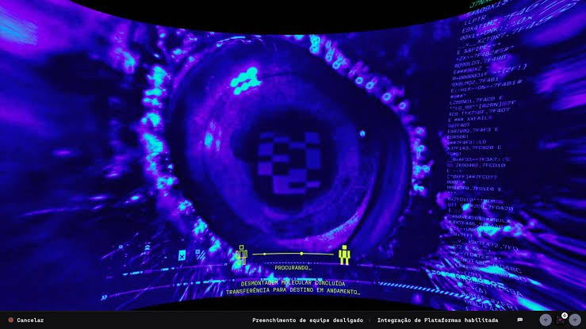
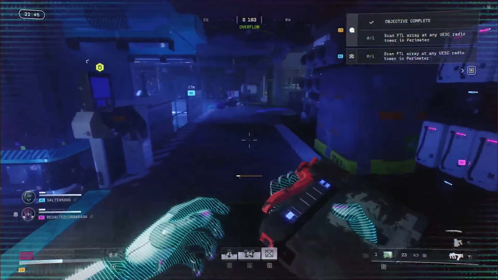
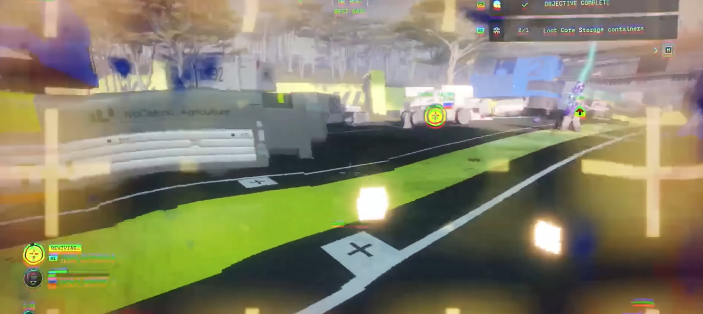

Quá trình nạp trận đấu không dùng màn hình chờ tĩnh kèm mẹo chơi game thông thường, mà mô phỏng giao thức truyền tải ý thức của Runner vào cơ thể nhân tạo. Màn hình chạy các dòng mã kiểm tra sinh trắc học, thông báo INITIATE CONSCIOUSNESS LINK của hệ điều hành ONI, kết hợp với hiệu ứng hình ảnh nhiễu sóng và âm thanh tần số thấp trước khi mở mắt tại điểm đáp trên bản đồ.

Không có bản đồ nhỏ (Minimap). Thay vào đó là một thanh la bàn ngang (Compass Bar) mảnh, hiển thị số độ hướng quay, biểu tượng hướng điểm Exfil và các điểm Ping của đồng đội. Các icon 3D trên màn hình tự động giảm độ đậm (opacity) khi người chơi hướng tâm ngắm vào để không che khuất kẻ địch.
Hiển thị thanh máu, thanh giáp chia theo từng ô rời (1–4 ô giúp người chơi nhẩm tính ngay số lượng Shield Charge cần dùng), đồng hồ đo nhiệt độ cơ thể/thể lực, thời gian hồi kỹ năng (Tactical / Prime Ability) và bộ đếm đạn kích thước lớn bằng font PP Fraktion Mono.
Khi mở hòm đồ hoặc xác đối phương trong trận, giao diện chia đôi màn hình thành 2 lưới ô vuông phẳng (Balo cá nhân bên trái – Hòm đồ bên phải). Nhờ hệ thống icon 2D tối giản và màu nền phân cấp độ hiếm, người chơi có thể thao tác kéo-thả hoặc bấm chuyển nhanh vật phẩm trong vài giây.
Các vật phẩm tiêu hao như Patch Kit hay Shield Charge được gắn vào menu vòng tròn (Radial Quick-Wheel), cho phép vừa di chuyển nấp góc tường vừa chọn bơm máu/giáp mà không bị khóa tầm nhìn bởi màn hình kho đồ.

Khi cơ thể Runner bị dính lựu đạn xung điện (EMP Grenade), quá nhiệt, hoặc chịu hiệu ứng Digital Psychosis quanh các vùng vật chất dị thường, toàn bộ các khung chữ và thanh máu trên HUD sẽ bị lệch màu (chromatic aberration), nhòe chữ hoặc nhấp nháy cảnh báo đỏ, truyền tải trực tiếp tình trạng hỏng hóc phần cứng lên màn hình của người chơi.
Xung điện từ làm tê liệt tạm thời HUD, chớp nháy màn hình tĩnh điện trắng-đen.
Cảnh báo đỏ rực toàn khung hình, thanh nhiệt độ cơ thể chớp nháy liên tục.
Hiệu ứng lệch màu sắc (chromatic aberration) và biến dạng chữ khi tiếp xúc vật chất dị thường.
